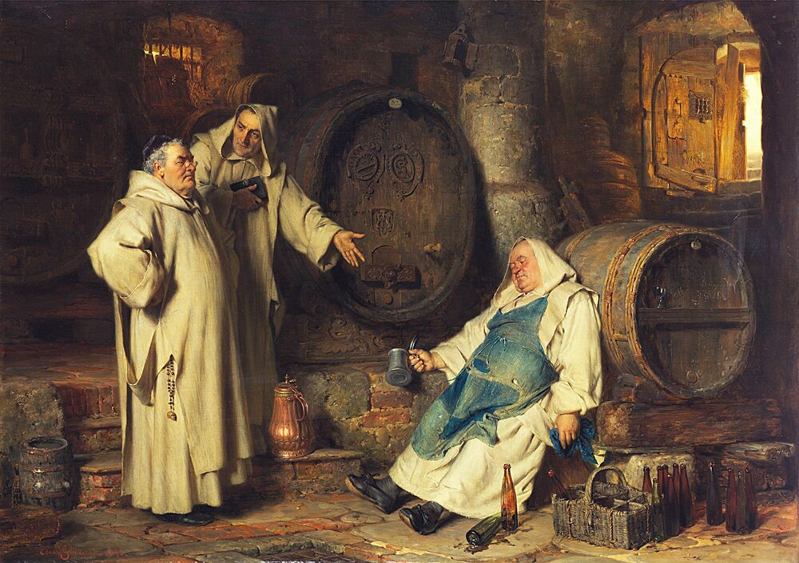
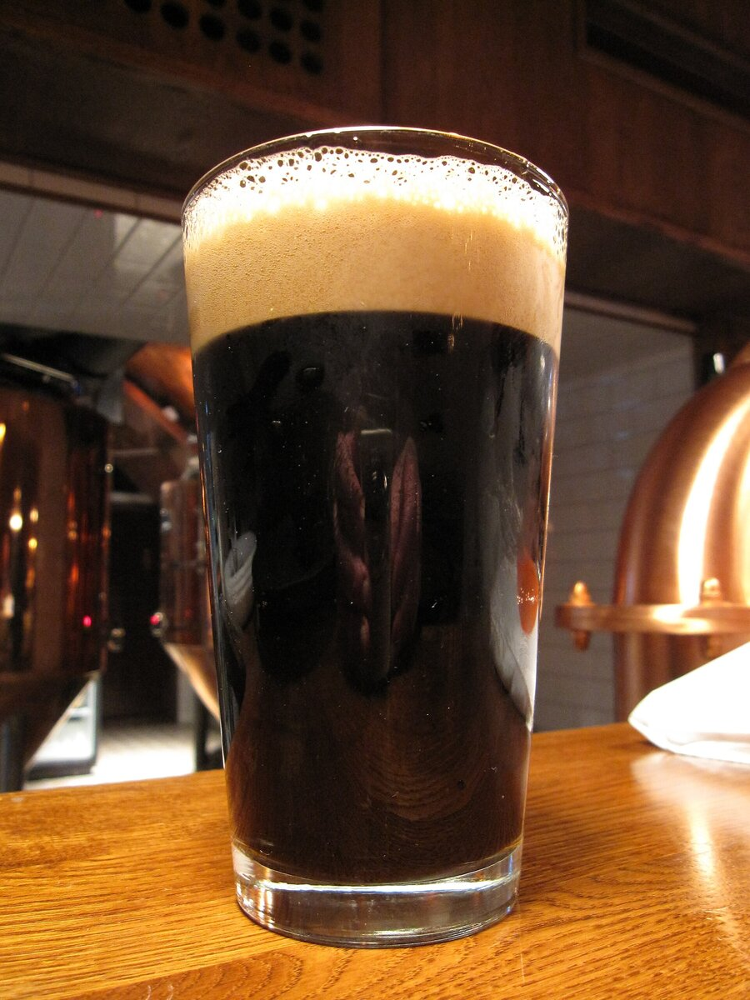

B1 · Food & Dining
How to Read a Beer Menu
Four words — lager, ale, hops, malt — and most of a menu becomes readable.
Play the audio and follow along, then read it again on your own. Tap or hover over a highlighted word to see what it means.
Beer is made from four things: grain, water, hops and yeast. The grain is usually barley, which is malted — allowed to begin sprouting, then dried — so that its starch turns into sugar the yeast can eat. The yeast then ferments that sugar — eats it, and gives off alcohol as it goes. The hops are flowers, added mainly for bitterness and aroma, and they are the reason one beer tastes sharp and another tastes soft. Everything on a beer menu is a variation on those four ingredients.
The first split is between lager and ale, and it is not about color, despite what most people assume. It is about the yeast. Lager yeast works slowly, at cool temperatures, settling to the bottom of the tank; the beer is then stored for weeks while the flavours settle. That is where the name comes from — lagern is German for “to store”. Ale yeast works fast and warm, at the top of the tank, and produces more fruity flavours as it goes. A lager can be almost black and an ale can be pale gold. The yeast is what decides the category.

Pilsner is the style most people picture when they think of beer, and it is a kind of pale lager. The name comes from the city of Plzeň — Pilsen in German — in what is now the Czech Republic, where it was first brewed in 1842. It was the first beer that was both pale and clear at a time when almost all beer was dark and cloudy, and it was copied so widely that most of the world's mass-produced beer is still a version of it.
Pale ale is the ale equivalent: golden to amber, noticeably hoppy, but balanced. India Pale Ale, or IPA, is the same idea pushed much further, with far more hops and much more bitterness. The name comes from the trade in English beer to India in the eighteenth and nineteenth centuries. The tidy story — that IPA was invented so it could survive the voyage — is a simplification that grew up later; beer of several kinds was already being shipped there successfully, and heavily hopped beers already existed. What is true is that well-hopped pale beer traveled well, sold well in India, and eventually took the name.
American pale ale, APA, came out of the craft brewing revival in the United States from the late 1970s onward. It is usually less bitter than an IPA and more balanced, and it is defined largely by American hop varieties, which tend toward citrus and pine rather than the earthier flavours of English hops. That difference in hops is most of what separates an American pale ale from an English one.
At the dark end are porter and stout, and their relationship is the opposite of what the names suggest. Porter came first, in London in the eighteenth century, and took its name from the market and river porters who drank it. Stout originally just meant strong: a “stout porter” was a stronger version of the same beer. Over time the two drifted apart, and today stout usually means the darker and more roasted of the pair — dry, with flavours of coffee and dark chocolate that come from roasted barley, not from any coffee or chocolate being added.

.jpg){kind=link}
The practical advice is short. If you do not know what you want, the words on the menu will tell you more than the brand will. Anything called pilsner or lager will be light and crisp. Anything called IPA will be bitter. Anything called stout or porter will be dark and roasted. And if you are not sure, most places that care about beer will let you taste a small amount first, which is the fastest way to learn any of this.
Key Vocabulary
- grain the seed of a cereal plant such as barley or wheat
- to malt to let grain begin sprouting and then dry it, so its starch becomes sugar
- to sprout to begin growing shoots
- starch the carbohydrate stored in grains and potatoes
- yeast a microorganism that turns sugar into alcohol
- hops the flowers added to beer for bitterness and aroma
- bitterness a sharp taste, the opposite of sweetness
- aroma a smell, usually a pleasant one
- crisp clean and refreshing in taste
- cloudy not clear; hazy
- mass-produced made in very large quantities by industrial methods
- balanced with no single flavour dominating
- revival the return of something that had declined
- variety a particular type within a species
- to drift apart to become gradually more different from each other
- roasted cooked with dry heat until browned, which deepens flavour
How to Read a Beer Menu — B1 · Food & Dining · Renan the Teacher, English Language Academy · https://renangrossi.github.io/englishclasses/reading/b1/beers.html
Interactive Exercises
Practice
Complete each exercise, then click Submit to see your score and an explanation for every answer.
Speaking & Writing
Discussion
There are no right answers here — use these to practice speaking, or write a short answer to each.
- The writer says the style name tells you more than the brand. Is that true of other things you buy?
- The IPA origin story is neater than the history. Why do simplified stories spread more easily than accurate ones?
- Is there a drink or dish from your country whose name people commonly misunderstand?
- Would you rather order something you know you like, or something you have never tried? Defend your answer.
- Write about 120 words explaining a food or drink from your own country to someone who has never had it — what it is made of, and what it actually tastes like.